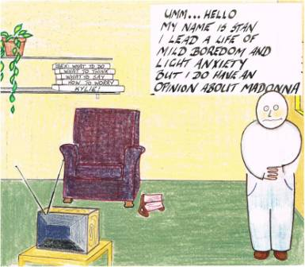
A while ago, I was rung by Richard Letts of the Music Council of Australia, a kind of peak body of music organisations asking - to my amazement - if I would give the Annual address at their annual conference. Robyn Homes of the National Library of Australia had seen me speak at the National Library's 2010 Innovative Ideas Forum and had suggested I give the address. So, having braved the quite extraordinary incompetence of Virgin Blue last Sunday, and not got to Brisbane on time to give my talk, I got there to give the talk after lunch on Monday. Its title was that given in the heading above. As a bit of light relief, but with some intent beyond that, I included in the lecture, a bunch of cartoons from a former life. They are displayed in the text below at the point where I clicked the remote control and brought them onto the screen behind me displaying PowerPoint slides. It doesn't seem like such a long time ago, but I did those cartoons nearly 25 years ago. Anyway, I hope you enjoy the speech - and the cartoons.
I.
You may be surprised that I am standing before you giving your Annual Address. But not as surprised as me. Richard Letts rang me a few weeks ago and asked me to speak to you. I didn’t know why. He said that someone had heard me speak and that they had recommended me. They certainly didn’t hear me play any music.
I am an economist, though I like to think not of the marauding kind, and in 2009 was the chair of the Federal Government's Government 2.0 Taskforce. It was in prosecuting the cause for Government 2.0 that I was heard and recommended for this address tonight.
If you’ve wondering what Government 2.0 is, you’re not alone, though I’m hoping you know what Web 2.0 is. The term Web 2.0 was popularised in 2005 to signify the internet’s transition from being a medium for point to point and hub and spoke medium communication and interaction – as in the case of e-mail and websites respectively – to being a medium, or as it has become fashionable to say, ‘platform’ on which people who might not even know each other could discover each other and collaborate. Wikipedia is the iconic example.
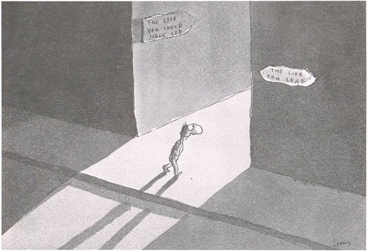
I think Web 2.0 offers extraordinary possibilities in our society, our economy, our government. It’s been said, I think with only mild exaggeration that its significance is like that of the book. If that is so, then one would imagine some of its most exciting, its grandest possibilities to arise in the world of culture. Over the course of my time as Chairman of the Government 2.0 Taskforce, to my own surprise, I morphed into a motivational speaker. Perhaps that’s why the person who heard me recommended me. And tonight, in my own way, I’m going to give you a motivational speech.
I’ve titled this talk “The life you could be leading” to refer to that golden age that beckons. And it’s not inconsequential that it comes from a cartoon by one of the world’s best cartoonists Michael Leunig.
II.
You see just as you are musicians, in addition to being an economist, I am a cartoonist. Or was a cartoonist. It all began in the mid 1980s dull and depressed on one of Melbourne’s cold, drizzly winters days sitting in my bedsit next to a small radiator. I sketched out this cartoon on a card and sent it to a friend in Canberra.
Other friends asked me to do other cartoons for them. I told them I’d love to, but the cupboard was bare. I hadn’t thought of any ideas. Then one day on the plane to visit my parents and some of my friends in Canberra, I sketched a bunch of ideas for cartoons.
My little hero Stan acquired the red and yellow “S” on his chest and he was on his way.
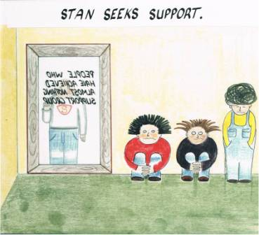
Within a year, I’d decided that I liked these small creations and had arranged my life so that I could take it somewhat seriously as a part time job, with money coming in from the other half of my time in more remunerative activities.
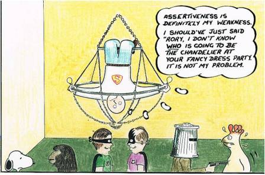
So, as Halley’s comet shyly grew in our night sky before it faded and left to prepare its next once-in-a-lifetime show for my children, I cartooned away. Stan went from adventure to adventure and other characters and ideas came out of the woodwork.
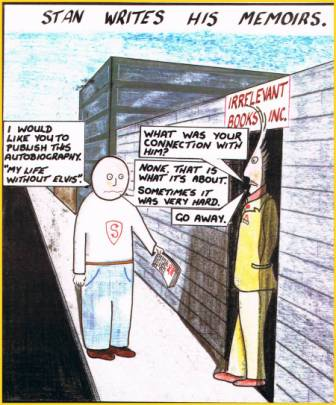
Stan went to parties. Stan wrote his memoirs. There was even a prequel to Stan’s life – the creation of Stan myth, and the more downbeat reality.
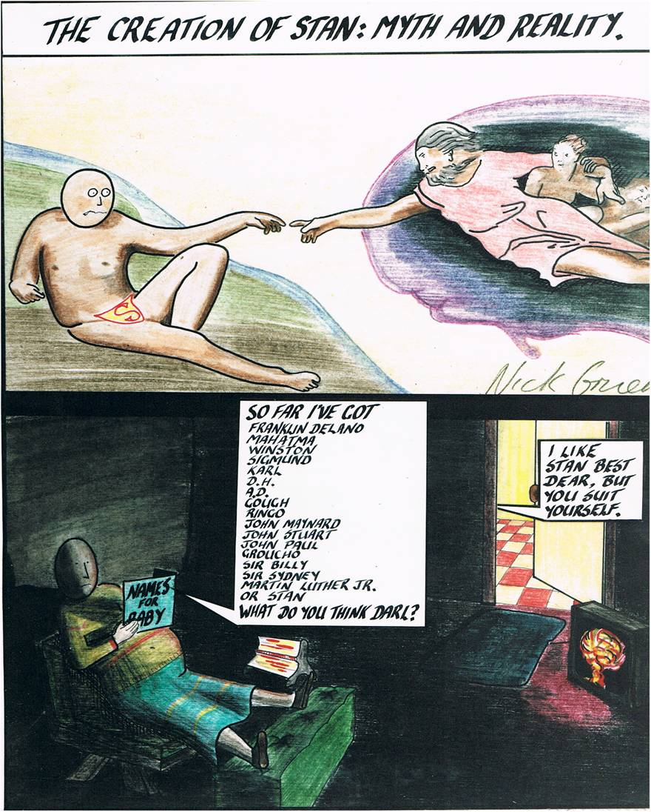
Personal computing had arrived and with some trepidation I chose an Apple Macintosh for its fun and ease of use. Almost immediately a character Sean Sheep began sending me messages. He was trapped inside the computer and used me to send his mother messages. And the screen capture function alleviated my performance anxiety as a draftsman.
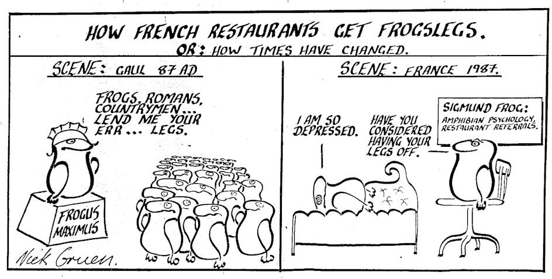
There were lots of other cartoons which, at the risk of some distraction I’ll occasionally sample in the display as I proceed with my talk.
III.
But let me now return to the miracle of Web 2.0.
One can call Web 2.0 ‘social networking’ but to do so is to trivialise it. For web 2.0 or collaborative web means much more than Facebook Turbocharging your social life or meet-ups on-line. Let me give you a simple example. It is, I hope you will agree, an extraordinary thing. Economically I’d guess (admittedly quite wildly), that it’s worth to the world is something like $50 to $100 billion per year but over time it might be much more. It’s not more than two years old and, despite its ubiquity, despite the fact that everyone here will know someone who knows about this thing, I’m guessing only a minority of you are really familiar with it.
I’m talking about the Twitter hashtag. Twitter is highly irritating and absolutely fabulous. It seems so trivial – a device for broadcasting SMS messages of no greater depth than can be fitted into 140 characters.
But there’s nothing trivial about putting pressure on the Ayatollahs of Iran, or saving lives in natural disasters. How does Twitter do this? When Twitter was launched in 2006, it provided a means by which people could follow others and thus ‘tune in’ to their ‘tweets’. Put another way, once Twitter existed, one could send an SMS message about where one was or some urgent but usually minor need, want, observation, irritation or acknowledged triviality to a friend, or to whomever had decided to ‘follow’ you on Twitter.
Of course, none of this seems like much of a breakthrough. But then, what communications innovation ever devised hasn’t initially struck people as being much more than a cute new toy? Anyway, tuning in to the ‘tweets’ of a bunch of people you’ve chosen to follow turns out to produce a turbocharged grapevine. And a lot of our lives depend on what we find out on the grapevine.
But sometime around February 2008, users of Twitter (It’s important to note, not its owners) started doing something new. They started attaching hashtags to their tweets. The hashtag is simply a string of letters, often words or concatenations of words preceded by the hash sign you can find on mobile phone or keyboard (by pressing ‘caps + 3’).
Thus, during the recently – and mercifully – completed election campaign, the hashtag #ausvotes gained currency. And this meant that anyone can set their computer or smart phone to read all ‘tweets’ or SMS length messages that include the hashtag #ausvotes.
I’m hoping you can see how remarkable that is. Once they find out the hashtag, anyone, anywhere in the world, can now observe the conversation of people, between groups of people large and small, all of whom, by their use of the hashtag have opted into a conversation about a particular subject. And of course that conversation can be about anything, from the sublime to the ridiculous.
Twitter has given birth to new twists in our language, not just to shorten messages (for instance by spelling ‘great’ “G-R-8”) but also to build hashtags that others with whom one has had no previous communication might be able to anticipate. Yesterday I was infuriated with the vast inconvenience of VirginBlue’s incompetence in dealing with the meltdown of its booking system. They could have sent those of us whose e-mails and mobile numbers they had, updates of progress, so we could go about our lives whilst they updated us on progress rather than have us all clog their telephone lines and terminals with our questions. They could indeed have been using Twitter to communicate with people. I received a call from Optus within about fifteen minutes of bagging them a few months ago on Twitter – using the tag #Optus which they had the sense to monitor.
I used 97 of my allotted 140 characters to tweet “Now plane has been cancelled. #Virginbluefail. After a wait from 11.00 to 4.37 pm. Thx Guys”. And people I’d never met before and who had not subscribed to my tweets, could nevertheless anticipate that those with a common interest in VigrinBlue’s problems would be including the tag #virginbluefail into relevant tweets, and so it was. If I wanted to find out when Virgin Blue’s system was up again, the first place I’d find out would be from Twitter.
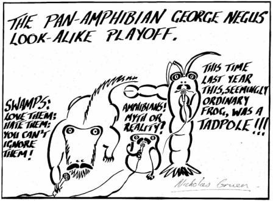
During a natural disaster Twitter often offers the best way to find out what’s happening where it matters. It offers a way for whole communities of interest and practice to form and grow year on year, or to swarm temporarily on some point of common interest, often an event like a conference or some political or social event and then to disappear. And like so many of the other Web 2.0 technologies, it offers a fabulous way for people who have something to say to each other to find each other.
IV.
Collaborative web is big news for governments because government is a community collaboration, or should be. The possibilities that Web 2.0 brings to governments are immense.
Let me give you an example. The National Library of Australia’s microfiche records of our newspapers going back to 1802 have been digitised, by being read by computers using optical character recognition software, with the result hoisted on the internet. That means all those newspapers are searchable by computer. This hugely improves the utility of the collection because you can now search our newspapers in the way we search the internet using Google.
Of course computers have problems reading newspapers that are over two centuries old. So the NLA has mounted the digitisations of each article on a page which converts to a wiki, enabling any viewer to correct any mistakes. The results have been remarkable. Though the site was never launched, since it’s gone live in 2007 it’s never been idle. In other words, at any time, including right now, there are people on it, reading and correcting text.
Around 20 million lines of text have now been corrected. There’s been no vandalism, partly because, as with Wikipedia, there’s no satisfaction for the vandal. A mouse-click and their silliness is gone. And, as with Wikipedia, there are power volunteers, people who take to the new platform spending more time than anyone was expecting, including one imagines themselves. Julie Hempenstall of Bendigo, has corrected half a million lines all on her own.
Why does she do it? She says she prefers it to housework. She finds it intriguing and I suspect she’s competitive. She’s been at the top of the leader-board for a long time and I suspect she enjoys the recognition provided to her by the National Library which flew her to Canberra for a function to recognise the great contribution that she and other power volunteers were making to the greater good. Some of her kind find it addictive, And all the NLA’s ‘power volunteers’ say one reason they do it is that their work is socially worthwhile.
V.
What web 2.0 is allowing us to do is no less than improvise on the boundaries that define our institutions. Many people are in public service because they place the social benefits of public service high on their scale of values, perhaps higher than the money they could make outside the public sector. Indeed, we’ve set it up that way. So public sector pay is flatter than private sector pay, but we also provide greater job security in the hope that it’s an antidote to corruption. We don’t want our public servants wondering if they’ll be able to make ends meet in retirement, or so the thinking goes, because we don’t want them to be tempted by the blandishments that might be on offer.
I’m not sure that I do, but even if one thought that, like democracy, such a system might be better than all the others, it still comes at a heavy cost. Ultimately, such a structure attracts time servers as well as those who are intrinsically motivated by public service. The result is always and everywhere a strong division between insiders and outsiders.
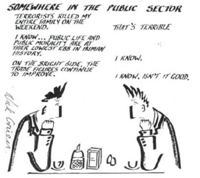
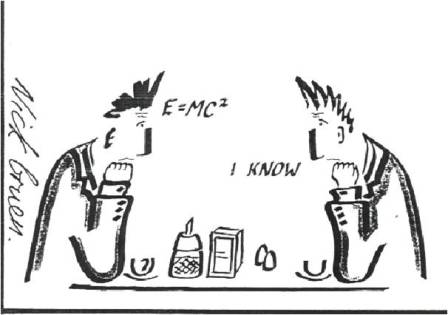
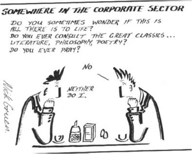
This isn’t just the case within departments of state. It has happened in plenty of other places, not least the ABC, with the security and remuneration of the insiders being made up for by discomfort, insecurity and impecuniousness for the outsiders, those who turned up too late to qualify for the conditions of earlier times, or those who had sufficient get up and go to leave the nest and now wish to return.
One of the things about volunteers is that whatever their aptitude – and like paid employees, it will vary – there can be no doubt that there’s intrinsic motivation there. Julie Hempenstall does what she does because she wants to, since there’s no other motivation for her to do so.
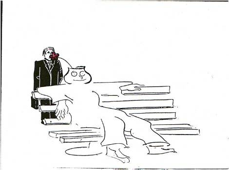
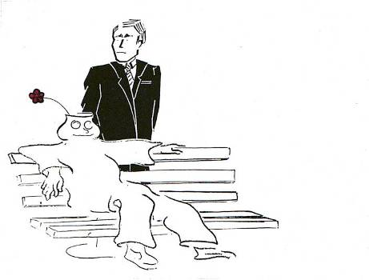
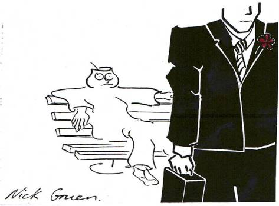
As I wondered aloud in a newspaper column, I wonder when the first secretary of a department will come from the cadre of volunteers like Julie Hempenstall, rather than people who went up through the usual channels.
VI.
And this power of intrinsic motivation is surely a huge thing in the arts. Artists need money to live on, and to realise their dreams. That’s no small matter. It’s a sine qua non. But intrinsic motivation powers the arts.
But something paradoxical has been happening, and to explain what it is, I want to introduce you to a simple, but slightly technical economic idea. That idea is the public good.
To the uninitiated in economics – a public good is usually understood loosely to be something that is good for the public or something that governments fund.
But in economics, a public good has two characteristics. It’s a good that is non-rivalrous, which is to say that if one person is enjoying it, this doesn’t stop others from enjoying it. So the broadcast of yesterday’s AFL Grand Final was non-rivalrous. By contrast, a physical object is typically a rival good, like the ball the players kicked around. One side’s having the ball means the other side doesn’t.
Secondly, a public good is non-excludable. The classic example in the economic textbook is a lighthouse, which is useful to all ships passing some promontory. It is non-excludable to ships passing by because ships get the service of the lighthouse, whatever they do. And normally, you can’t charge for services if people are going to receive them whether they pay or not. That’s why in the economic textbook, governments typically provide public goods using coercively raised funds from taxation.
In the last year or so, I’ve spent some time pointing out that there’s a growing problem with what we all got taught in our economics textbooks. It’s this. Economics Nobel Laureate Elinor Ostrom says this “Public goods . . . present serious problems in human organisation.” Why? Because their non-excludability means that there are difficulties in providing them in a market.
The problem with this statement is that it ignores a phenomenon that’s becoming increasingly important. In fact this was known and brought into prominent focus by the founder of the discipline of economics, the great Scottish Enlightenment philosopher Adam Smith.
Smith was an advocate of self-interest in human affairs but in a much richer, more interesting way than is usually understood. As Smith sees it, we begin our lives as blobs of infantile egoism. This is the egotism of the nineteenth century disciplinary construct homo economicus – Smith is on board with modern economics at least to the stage of infans economicus. But from then on Smith sees the process that we now call socialisation deepening and transforming us.
This process of socialization is driven by our innate sociality. As babies we learn from our immediate family, upon whom we are utterly dependent, that some things win their approval and admiration, others their disapproval and even disgust. Our craving of approval and dread of disapproval and our ability to understand others by imagining ourselves in their shoes draws us into a life long dialectical social drama.
In modern economics, the attraction of great power, fame or wealth is simple greed for more. Smith’s richer psychology offers a more plausible explanation. “[T]o what purpose is all the toil and bustle of this world?” Smith asks. What human drive lies behind avarice and ambition?
Within society, self interest becomes a rich ethical meal, not the morally anorectic egoism of homo economicus. Our natural sociality enriches and educates our self-interest. Craving esteem and imagining ourselves as others see us, we gain some objective appreciation of our own moral worth. And this is ultimately a spur towards virtue as we strive to be worthy of the esteem we crave, although of course as we are mere mortals there is much stumbling on our journey.
I’ve argued that this picture of human beings painted by Adam Smith offers the best lens through which to see Web 2.0. For Web 2.0 is powered by nothing more nor less than human sociality set free from the confines of location and (to some extent) time.
For Smith, though he doesn’t use the term, the social mores that underpin our society and economy function as public goods. They are non-rivalrous, since anyone can share them, and typically non-excludable, as they exist in the form of general social expectations.
Modern economics would tell us that there is no incentive for such goods to be built except collectively. And yet because of the inherent sociality of our species, because we care about what our parents think of us and come to care about what we think of each other, these public goods simply build themselves. I call such pubic goods, emergent public goods, because they simply emerge from social interaction. Indeed Smith wrote a treatise on the evolution of language, and language is the ultimate emergent public good.
And while as the quote I took from Eleanor Ostrom illustrates, economists think of public goods as a problem, emergent public goods, public goods that build themselves are not only not a problem – they’re the very foundation of what makes us such an extraordinary species. Once built they go on and on, and their non-rivalrous nature means that anyone can use them — forever, though with these kinds of public goods, they are transformed as they are propagated.
VII.
But why am I telling you all this?
Because something is going on that is as strange as it is important. If you think about all those Web 2.0 platforms I’ve mentioned to you – Google, Facebook, Twitter, Flikr, Wikipedia for instance, they are all are public goods – available to all without charge. And they’ve all just emerged. All involve the construction of a platform on the net. This part entails some cost, but for profit and not-for-profit organisations come forward to build them. And then human sociality – the desire human beings have to interact with each other as Smith had it – does the rest.
The plot thickens when I mention that in fact all of those platforms are excludable – Wikipedia or Google or any of the others could require people to pay a subscription to log-in. And yet they do not. Because the value of their platform is largely a function of how many people they can get onto it, they choose to open their platform. In doing so they generate huge social value. For a philanthropic site like Wikipedia, it’s amazing how many billions of dollars of economic value can be built for nothing by the community once a small amount is thrown into the building of the physical and organisational infrastructure to keep the online encyclopaedia running.
What’s more amazing though, is that the vast bulk of major web 2.0 platforms are built for profit. And those who build them understand that radical openness generates radically more social value. The fact is that the great platforms of Web 2.0 would be largely worthless if they exercised the excludability of their platform and charged for the service. Because the main service they are mediating is not anything they provide. Rather the platforms are architecture for us to configure, enter and participate in relationships with each other.
And it turns out that being able to monetise what is usually just a tiny fraction of the social value this creates can often make the builders of web 2.0 platforms rich beyond their wildest dreams.
VIII.
The contrast with the recording of music couldn’t be starker. Most great musicians are like Julie Hempenstall of Bendigo, which is to say they are mainly motivated by their love of what they do and perhaps by the glory of being better than others. Of course, this doesn’t solve all our problems. Amateur music making can be extraordinary, but music making is perhaps the preeminent art in which we must find makeshifts to fund people to make music making their life’s work.
So I’m not here to sell you any easy story about how, if you just let it all hang out on the net, all your problems will be solved. But I am here to suggest to you that the potential of the internet to turn musical productions into a public good is a much, much bigger opportunity for you than it is a threat.
We have by now, built many institutions that somehow conspire to convert what could be an immensely valuable and abundant public good into a scarce private good. Copyright is one. One can understand both the economic and moral logic of allowing people to economically exploit their own work by giving them some monopoly rights in it. However, copyright has never been built as a piece of rational micro-economic policy. That’s pretty obvious when we see it retrospectively extended each time Mickey Mouse’s plastic nose begins poking its way out from under the capacious tent of copyright protection.
It’s pretty obvious when we see that copyright is so tightly defined and so ferociously defended that a mother who posted a video of her child dancing to a pop song, was hounded by the corporation holding copyright to that song, even though its hard to believe a single person would have been tempted to make a recording of that video to listen to the music. Lawrence Lessig also tells of a video that cost a little over $1,000 that would have cost over $100,000 to release, given the cost of clearing the snippets of copyrighted content in the video.
Given the extraordinary costs of the system, it’s not surprising that even fated pop-stars receive only a small fraction of the royalties with most of the money going to publishing firms who spend it on marketing and litigating.
And you wouldn’t think the copyright system was very ethical if you were American singer, songwriter, bandleader, producer and the principal architect of P-Funk, George Clinton. His style of music can involve sampling others’ music, but you’d think he’d be on safe ground sampling his own. Not so. As the Atlantic Monthly author put it, the story read like a page “ripped straight from Evil Corporation Digest”.
"Yeah, I got sued for sampling my own stuff," Clinton told us with a bemused smile. "In fact, I still got a suit pending." After trying for six weeks to license a song that Bridgeport partially controlled, a company representative finally got back to us. The man on the other line – who I imagine was chomping on a cigar – said only, "Denied!" Before abruptly hanging up, he added, "Denied. No reason!"
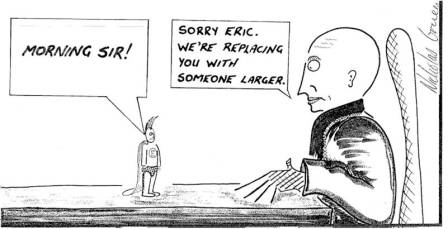
Often, the long chain of royalties can pose huge logistical problems, especially where there are multiple performers, as each person must be tracked to receive their $2.14 cheque or whatever it is at the end of each year.
Of course the benefits of copyright in providing one way to fund some creative activity that wouldn’t otherwise be undertaken cannot be denied. Accordingly, I'm not suggesting that copyright law be abolished or that if an individual wants to avail themselves of what copyright can do for them, they should not do so. Indeed, the copyright system is so economically dysfunctional that one could clean up a good deal of its excesses with essentially zero impact on artists. More sensible 'fair use' provisions would be an excellent start.
However, I do want to draw to your attention, and get you to look carefully at how much good the assertion of copyright can do you - as individuals and as institutions - in any particular situation. Because the dividends from copyright to creative activity are very small when compared with their enormous private and social costs. Those costs aren't just seen in the administrative and legal apparatus though they dwarf the costs of funding royalty payments to artists. They're growing because the gains from the alternative – free distribution, remixing fuelling further creative activity– have been burgeoning on the web.
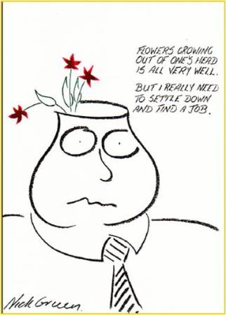
IX.
To summarise, there’s a huge irony here.
Google and Twitter have been built privately for profit, and yet part of their profit-seeking has been to embrace radical openness. That radical openness has created so much social value, that capturing, or ‘monetising’ just a tiny fraction of has made their creators rich beyond their wildest dreams. And now, because of the internet – the same technology used by Google and Twitter – recordings of mainstream cultural artefacts that define our western culture – whether they’re in the visual or performing arts – are suddenly capable of becoming public goods themselves. And yet we still seem to be striving to convert abundance into scarcity, public goods into private goods.
In preparing for this talk, I spoke to the director of one of Australia’s fine symphony orchestras. I was told some interesting things. First, that when all costs are taken into account, commercially released recordings almost always lose money for the orchestra concerned. Second, that the particular orchestra has concert hall quality recordings of their past performances stretching back many years.
I asked whether the copyright of others, or royalty arrangements with individual members of the orchestra were stopping the release of these recordings on the internet. The answer was no. Many recordings were of out of copyright works. Further, unlike arrangements made in other countries, the orchestras that emanated from the ABC as our major symphony orchestras did, socialised the royalty payments owing to their players, rather than paid them individually.
I was told that the real stumbling block was that live performances some musicians sometimes fluff a note. And they wouldn’t want that getting around.
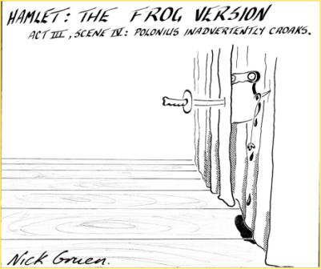
Now I appreciate the extreme perfectionism of the musician, or I hope I do. But if there was something wrong with mistakes in a live performance why do people flock to them and tune into them on FM radio. Some of us strive for perfection, but none of us are perfect.
And as much as I do respect the mentality of the craftsman, I confess I also wonder whether music administrators would be quite so indulgent if for instance a musician in an ensemble took exception to a particular piece of post-production, like some setting of the equalizer or the design of a CD cover.
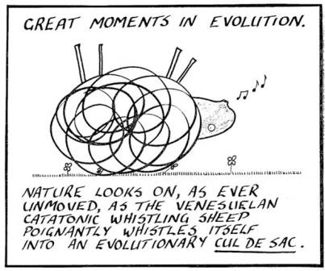
X.
But if that doesn’t persuade you, I hope you might be persuaded by the opportunities on offer. To illustrate them, let me tell you a Government 2.0 story. In 2007, the New Zealand Police were working on a new Police Act. And they found themselves with NZ$12,000 to do a full consultation with the people of New Zealand. How to do it? One brainstorming session later they decided to hoist the draft act up on a public wiki – enabling public participation in drafting the Act a la Wikipedia. Of course the legislators retained the final say, as is appropriate in a democracy.
The exercise exceeded the Police’s wildest expectations. They got their day in the media sun, not just around New Zealand, but around the world – in the New York Times, the London Times, the BBC. Not surprisingly New Zealanders heard of the wiki and many more heard of it than if just NZ$12,000 had been spent in advertisements or other standard marketing material.
Many of the world’s major music-making ensembles have been put off freely distributing their music on the internet by all those filaments of fear, uncertainty and doubt. Around copyright, funding, perhaps undercutting their peers (as if their peers stand to make much from their copyrighted work), keeping the publisher onside (as if the publisher is doing much anyway), administration of royalties and the perfectionism of musicians.
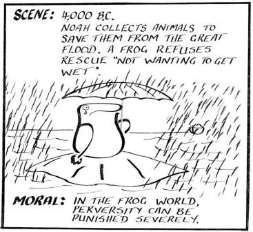
So here’s an opportunity for music makers in Australia to lead the world. Despite what proportion of the world’s fine music making is funded by the public purse, it’s still remarkably rare for music makers of world standing to do what MIT has done with its own educational material and recordings of lectures, which is to simply make it available to the world, at no cost – a global public good.
There are huge gains for the world in accessing the riches of your performances, of your catalogue. But the gains aren’t only for the world. Just as Google, Facebook and Twitter figure they’ll do better, just for themselves from opening up to the world, who knows what benefits might come your way. I can guarantee you some benefits will surprise you.
Some of you will be aware of TED talks which are run by a Californian not-for-profit. It hosted very high-profile talks from some of the highest-profile and most interesting speakers in the world. They used to charge high fliers to come to one of their events in Long Beach, California, which held several of these talks over four days. They agonised about whether to open up their crown jewels to the whole world on the internet. They have done so hosting each of the talks on their own video channel.
For any of you who are interested I can point you towards a presentation outlining the myriad ways in which this has enriched and enlivened the institution of TED talks, but suffice it to say here, that many hundreds of millions of video downloads later, their events are booked out a year in advance. The ticket price? It has gone from $4,400 in 2006 to $6,000 today.
The Sydney Powerhouse Museum has hoisted many of its digital images online without claiming copyright whilst their research metadata is also available under Creative Commons licences. ‘Giving away' their content increases the public value the museum generates whilst marketing it for revenue-generating physical visits. And they make as much as they ever did from selling images. The museum's reputation as a world leader has been driven by these activities and is opening up many new long-term opportunities for the organisation.
And openness makes connections. You can imagine how radical openness has helped TED and the Powerhouse Museum attract the best talent. Because around the world, people are discovering something that Adam Smith always knew, but that most economists coming after them tried to get them to forget: That along with their capacity for self-direction and self-regard, people have an innate hankering to do something good for each other and their community. The global craze for ‘corporate social responsibility’ is in my experience directed mostly at attracting and keeping the brightest and the best, who take such aspirations as a sign of the intrinsic worth of working with a particular employer, and a sign that the workplace will be more fulfilling and perhaps more fun than elsewhere.
I confidently predict that an embrace of Web 2.0 will find you and your musicians making connections you weren’t expecting, with other musicians, with patrons? Who knows? And who knows what talent might find its way to our shores inspired and enthused by our own embrace of the possibilities now open to us.
XI.
In summary, in all but a handful of cases, the private costs to Australian music makers of Australian music embracing the new openness are negligible. The social benefits will be large. As far as private benefits to Australian music makers are concerned gifting the world with your riches will at the very least make you feel good – no small thing in the short lives that we lead before we go from hence and are seen no more. But I think there are more benefits for you than that and I’ve offered a sketch of what some of them might be.
What I can say is that dominoes are ready to fall in this area. Just as they were when a couple of years ago, a group of us started arguing for Governments to release public documents under open ‘Creative Commons’ rather than standard copyright. I heard all sorts of nonsense about how this really wasn’t sensible, about how it hadn’t been done elsewhere. I’m sure there were mutterings in corridors that I might not, after all, be a sound chap.
But this year’s budget was released under the most liberal of the Creative Commons licences. Once they started falling, there turned out to be nothing much holding those dominoes up. But acts like that have helped establish Australia’s reputation as having gone from being a laggard to a leader in Government 2.0. And I’ve been approached by several students from overseas who want to come and study in Australia because of it.
In ten years' time, any amount of publicly funded music will be up on the net, a free cornucopia of delights available to all. If you lead this charge you’ll be leading your life leading the world. Imagine the marketing opportunities one could build around such an initiative.
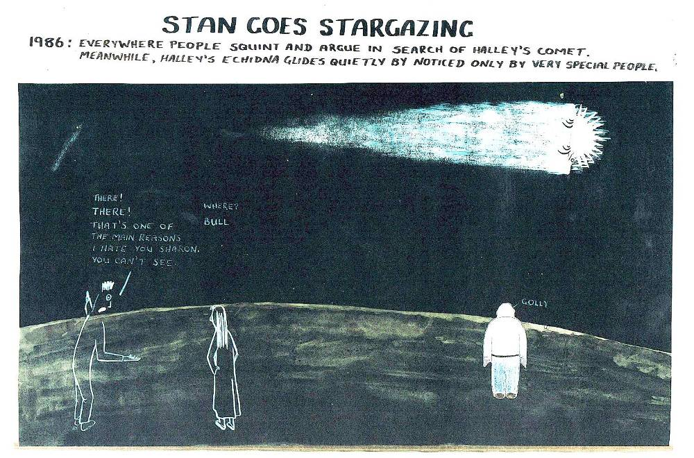
I don’t think you need to be a very special person to see this. I often think that if Web 2.0 was around in 1986 when Halley’s Comet streaked across our sky, today I’d still be cartooning.
I used to sell my cartoons in batches of 10 or more – so that readers could come to understand their vocabulary. However invariably once the first one or two were published, someone would walk past the office of the poor sub-editor who’d bought them and say something like “who’s this jerk?” and like a politician in response to a negative poll, the offending matter would be removed from future editions of the paper.
Though I’d be cartooning I wouldn’t have a job as a cartoonist, and in fact I never wanted one. There are lots of other things I wanted to do then, as I do now. Nevertheless had things been different, today perhaps a few people, maybe even a few thousand people dotted around the globe would have had their RSS feed readers tuned to www.stan.blogspot.com and every now and again they’d get a new Stan cartoon, or Sean cartoon, and they would be the better for it — as would I — just to know of the connection.
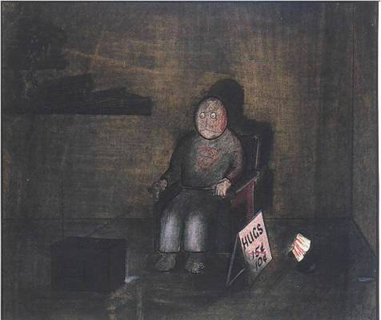
That was a life I can imagine I could have lived, but in fact it could never have been. The internet existed, but the world wide web was several years away let alone the collaborative world wide web 2.0. For you, embracing the radical, collaborative social space of web 2.0 really is a life you could be leading. I’ve only sketched one aspect of the riches it offers, but there are plenty more I haven’t the time to speak about.
Returning to Leunig’s cartoon, I doubt if the life you lead now is the dystopian misery he depicted. But I can almost guarantee you that a life with some genuine embrace of the possibilities of Web 2.0 really will be like taking a bright new direction in your life, one in which by enriching even more the lives of others, you enrich your own.
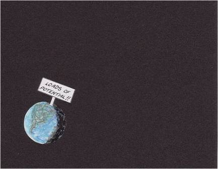
Thank you.
1. Jeff Huang, Katherine M. Thornton, Efthimis N. Efthimiadis (2010). "Conversational Tagging in Twitter". http://jeffhuang.com/Final_TwitterTagging_HT10.pdf, Proceedings of the 21st ACM Conference on Hypertext and Hypermedia (HT '10). 2. Thus one need not be physically present in a conversation, and one can respond to some comment hours or even days after it is made, whereupon the conversation can spark up again, or not.
Very nice Nicholas. A great summary of Web 2.0 and the economic models that support it for the layperson. I particularly thought you provided a great explanation of why #hashtags have such a powerful network effect. I'm glad that you made it clear that public goods aren't a panacea for all broken industry models though!
Have you read the article "The Grand Unified Theory On The Economics of Free"? I still consider this the seminal article on how to profit from any activity where bit-perfect digital replicas can be created and distributed for essentially zero cost.
As an related aside: it's funny what becomes viable when distribution costs of a non-rival good become zero. In the old days, I might have been expert in some obscure hobby where my expertise could never be packaged and sold (in book form or otherwise) at a profit. Additionally, the cost of distribution and advertising its availability acted as a disincentive.
But now -- I can stil enjoy that same hobby and publish my findings to the WWW on a blog at no net cost to me. Since it was just hobby time for me anyway, the costs of production are irrelevant. Ironically, the only real disincentives to publish come from copyright law and the fact that I am would be almost entirely forfeiting the chance to make profits by excluding others from using the IP...
Thx - I'd not seen the article to which you link but it's a nice summary of the logic of 'free' as you say, from the perspective of the creator of content - which was what the audience was thinking about.
Well, Nicholas, I now understand the ties you have with Gary larson.
http://www.ccs.fau.edu/~bressler/EDU/CogNeuro/Images/GaryLarson_brain1.jpg
http://pablorpalenzuela.files.wordpress.com/2009/03/gary-larson-1984-far-side-anthropologists.jpg (this one is a must)
Creative thinking, this is all about it.
Twitter ? Here is what I wrote 2 years ago. http://blog.hyperdoxe.net/2008/11/what-is-twitter-about/ only os the picture reference interesting.
It is all about chosing the proper media to cionvey the message !
cheers
Serge
Thanks for this totaly fascinating essay...I had not realised the "whole-world-opens-up" possibilities. I'm on f'book but must navigate twitter; sounds even more productive, and I'd thought it sounded like a nonsense. Thanks again!
Thanks Serge,
I love Larson of course. When I was travelling the world selling my cartoons in around Christmas, New Year 1986-7 there were two American cartoonists who stood out. Larson and Groening. I never much looked at Groening because I didn't like the way he drew and it took time getting through his "Life in Hell" cartoons. I kind of realised they were good, but they weren't my thing. Anyway, how wrong I was. I love the Simpsons. Is there a better show on TV?
(Oh! - and nice to see you tweeting the Frogslegs!)
I completely agree that web2.0-enabled content repurposing provides enormous opportunities for our Australia's cultural institutions (once we workout how to negotiate copyright & associated cost issues).
Inspiring talk. Think I'll spend some time this long weekend turning a whole bunch of my music into samples for people to find via ccmixter.org and do with as they see fit!
Nice post Nick.
One thing it made me wonder was how your point about the non-pecuniary benefits to the musician of producing music was taken by the audience?
The reason I ask is that, in its report of parallel imports of books, the Productivity Commission observed that authors often obtain significant "psychic income" from writing, and was then lambasted by the book lobby for devaluing what writers do. This of course puts economists in a bit of a Catch 22 - one the one hand, they are critised from the Left for giving too much weight to monetary considerations, but then when they explicitly introduce concepts such as psychic income they are criticised by the Left for giving too much weight to non-monetary considerations! (A similar thing sometimes happens when you try to introduce notions of non-monetary benefits and costs into discussions about appropriate pay rates).
So, did you receive any reaction from the muscial audience to your equivalent observation in their corner of the cultural field (or were they too engrossed in the cartoons to notice it)?
Thanks Tom,
It's difficult talking to people who are convinced of the merit of what they're doing (as in this case I am) but who think that no-one cares about them or values them. (Scientists feel the same way.) Teachers too. I think they've got a good reason to feel that way, but it's not easy to know how to address the problem.
But one thing I've noticed and we spent quite a bit of time talking about in questions is that people in that situation tend to be involved in a whole world of adversarial assumptions and behaviours. To some extent they have to be. It was obvious that the MCA was a well oiled pressure group. But that invariably puts it in a frame of mind that can blind it to the opportunities for taking their destiny into their own hands and trying for a sliver of a large unknown opportunity rather than seeking to get more from some known opportunity - a source of funding or share of a market.
I've not read the PC's stuff about psychic income. Did it take the opportunity to point out that most of the world's highest psychic income jobs are also the most highly paid jobs?
If music is the universal language, then Global Voices is the universal bloggers medium. A multi-lingual place for anyone's voice.#globalvoices
GV is one of the best non-commercial social sites.
Nick, enjoyed the address.
The global voices link is not correct. Try this one: Global Voices
I scanned the toons first, before even trying to read the article. Very inspirational, and quirky in a good way. A little bit of Leunig suits me fine -- to much Leunig just gets annoying and predictable, much like emo kids and their music.
When reading the article I only got to the invitation bit and was already thinking, "They want someone to blurt out a business model for the next century," and I guess that's what this story is about. Given the pathos and dark side to all the cartoons, I feel the following link is acceptably within context:
http://www.negativland.com/albini.html
I'm pointing out that the music industry fundamentally dislikes musicians, and just about every musician fundamentally dislikes the music industry. Only the money kept it going this long, and the money is gradually drying up. FWIW I don't blame copyright for the "George Clinton" situation, it's much the same as employment contracts everywhere -- people get ripped off because understanding the law and your rights is so complex. Unions don't help because they just become another agent with hand out for a fat slice, lawyers don't help because they want to keep themselves in business, governments don't help because more regulations make it even more of a minefield for all concerned.
I don't accept that music is a particularly special form of art. There are lots of art forms and what's special is largely a matter for the beholder to decide. I happen to think programming is an art form above and beyond all others, but then I'll admit to deep prejudice in such matters. If you go to places like "Deviant Art" you can see just how artistic talent is not even slightly in short supply. For that matter, based on the various free software archives, programming is not in short supply either, but the boring business of fixing bugs is as rare as novel metaphors.
Bad news for an economist to explain to artists: there's a glut of high quality product on the market (and an even bigger glut of low to medium quality product).
But it's far worse news to explain to the publishing industry: being a gatekeeper no longer has any value whatsoever -- enjoy the limited time you have left.
Completely aside... the hashtags come from IRC which is an older form of short-message chat that was around before Twitter. Each net generation seems to need to reinvent something before they can call it their own. The main difference being that on IRC, each hashtag has an "owner" while on Twitter is just belongs to whoever wants to use it (there's probably a short word that sociologists use to describe this relationship).
Thanks Tel,
The link seems to be down right now. Perhaps it will be better in the morning.
I didn't say music was special in the sense that it is more special or better than other art forms. I was just saying it is an art form in which a high level of technique is a sine qua non. That's not true of lots of other art forms. And as far as coding is concerned, those who can't code don't know (whereas those who can't play music can still pick a pianist who mucks up a note.) On hashtags, I know they were antecedent to Twitter. It says so on Wikipedia which I consulted before writing the speech.
I thoroughly enjoyed reading this! Beautifully crafted – I love a speech where the threads of interesting, but seemingly slightly disparate anecdotes are woven together to a tight knot at the end.
I was already converted to your way of thinking regarding recording artists. Quite a number of times I have been introduced to a particular musical artist by a friend giving me a 'mix tape' (which I understand many in the recording industry frown upon), but I have gone on to purchase albums and concert tickets when I otherwise would have not. Similarly, I have shared music with friends who have done the same thing.
I have another example, too. In his teens and early twenties (in the 1990s), my cousin Ben was in a death metal band called ‘Mournful Congregation’ - mostly a hobby/outlet for young lads with regular jobs. They independently produced a CD, which they sold cheaply at gigs, and managed some minor success supporting a couple of better known metal bands. When the internet gained popularity, one of the band members initiated a web presence for the band, including music. Over the years, the band developed something of a cult following – to the point that a year or so ago the band was sponsored to tour parts of Europe.
There are some very ‘courageous’ ideas contained in your address, given it was directed to the Music Council of Australia, but I admire their taste and openness in asking you to speak.
Thanks again for an entertaining and insightful article.
Richard Letts wrote me this email which he gave me permission to post, with a view to posting my responses, which I'll do when I get the time - there are lots of good issues raised.
My impression that you were a well oiled pressure group was formed not from the lady who argued so stridently for copyright immediately after my talk. I was thinking of the session I sat in on where it became pretty clear that the focus – which the focus was on generating demand for music and Australian content in various media. The focus was largely on coercive measures like local content provisions. Someone asked what I thought and I argued that the problem with local content quotas was that it encourages a race to the bottom based on cost minimisation. People didn’t really object to what I said, and some agreed, but it didn’t really get much traction. The common theme was ‘how will we set up this market to get more of our content into the media’.
A lot of economists disagree with this in principle – and object to it in the way that they object to tariffs and quotes on imports of goods and other interferences with otherwise well functioning markets. I don’t really think that. While I think that the ‘freedom’ of markets for culture is an important cultural issue, the deviation from some presumed economic optimum doesn’t bother me – indeed I wouldn’t necessarily regard the complete absence of constraint as an economic optimum (after all we are highly influenced by each others’ tastes, and many, I suspect most Australians would be comfortable with a collective decision to have more Australian content on their media).
So I’m not against your protectionism particular, but I was disappointed with the fact that, while some people agreed with my point – the person sitting closest to me from community radio for instance – and no-one was actively hostile to it, it was one of those things that was clearly not centre of mind. You were more preoccupied with generating demand for your services. Of course you can say that you also believe in the importance of the quality of those services – indeed I have little doubt that in your own lives you are very exercised on the point. My observation was that you were struggling to express that in your political activities. And it’s hard, which is why I drew attention to the point, but there wasn’t really much response. It certainly wouldn't be the first time that the quality of what one was doing was somehow crowded out when political push comes to shove.
In addition to not objecting to cultural protectionism on economic grounds I should also clarify my use of the expression ‘pressure group’. I won’t shy away from the negative connotations that you give it, but I’m not precious about it. You can’t make an omelette without breaking eggs. You believe in what you’re doing, and so do I. You want government money and I want you to have it. So I’m not saying you shouldn’t be rent seeking. I’ve learned from long experience that governments are large pain minimising organisms. So you’ve got to get in there with all the other rent seekers and go for your share. It’s not particularly pretty, but it’s necessary. There may be musicians among you who don’t enjoy practice particularly, but it’s part of the gig, so you do it.
But I think this can divert you in important ways (not least by generating demand for pretty low grade stuff), but just to reiterate, there may not be too many very fertile ways around this. It would be fun to try to think of some with you.
On copyright, I accept your concerns. My own focus is mainly on the policy issues, and it maddens me how much copyright costs, when we could (as I said either after or during the talk) allow it to serve the interests of artists without most of the costs that are currently being imposed. So I’d be very happy with a situation in which we went back to the older arrangements in copyright where copyright was available to artists to assert, but didn’t automatically materialise whenever anyone put pen to paper or pinkie to keyboard, where it gave artists a licence to economically exploit their work without insisting that everyone who wants to quote two lines of poetry can be sued for exemplary damages if they don’t get permission. But the copyright maximalists are fighting for their right to prevent people from doing anything they don’t like, even if its costs to them are negligible.
From your point of view, if you think it is in your interests to avail yourself of copyright, I think you should. I was only seeking to argue that you may not realise that there’s another life you could be leading, where the benefits are less certain, but may be much greater. Certainly for others but very possibly yourself, even considered in terms of your narrow self-interest, but failing that, perhaps in terms of your wider self-interest. As I said, I doubt there’s a single member of the MCA who isn’t there because it addresses their wider self-interest, rather than their narrow self-interest.
Which brings me to my final point. Which is that I’m just a scribbler and (to mix the metaphor) I’m really only trying to paint a picture which might inspire you to try some things which I think would be fantastic for us all – you included – but I’m perfectly aware I could be wrong and for that reason relieved that you’ll be making the relevant decisions, not me! I was honoured to be invited to give the address, and my intention was to inspire rather than to lecture. Alas my style of inspiration was a bit too much like a harangue. (My character Stan would never carry on like that!) But I hope the ideas are clear enough, and they are now yours – to the extent you agree with them, or more importantly, find them of use.
Great article Nicholas! It's obvious you've not only been reading the writing on the wall, but reading between those lines too.
you may be interested to know that I have almost completed the development of a revenue mechanism for the exchange of public goods between producer/publisher and interested members of the public, i.e. the artist and their fans exchanging art for money. It's called The Contingency Market and enables the expression of thousands or millions of simultaneous micro-contracts to exchange funds contingent upon a publicly visible event, e.g. the publication of an intellectual work. Thus a thousand fans could offer a musician $10 each to perform and publish a new studio recording. If they do, the musician gets $10,000, and the fans receive the digital master (freely shareable, copyleft). If they don't they get nothing.
I'm also working on a demo for this called 1p2U.com that enables a blogger's readers to sponsor their articles at a penny a time, thus "1p2U = One penny to you".
Thanks Crosbie,
The contingency market sounds wonderful. I hope it takes off.
It is true that these web 2.0 platforms were built for profit. However, they are also have a great impact on society far more than anyone has previously imagined.
Look at what happened in the middle east. Dictators of 30+ years have fallen. Corruption has been taken on. A hope for change has sprung out of... Facebook!
It's hard to predict where this will take us. I heard someone suggest that voting for elections would be possible in the future with Biometric computer plugins. Soon we will be posting our vote and people could 'like it'
Better get some Facebook shares when they go public next year!
love your almost dark satirical humor in your cartoons! I also love your insight on web 2.0. I think the web now has become a major storage of ideas and information, a sort of library but written by anyone. It’s not necessarily a good thing as information, whilst at one’s fingertips (quite literally in the Smartphone era), is not necessary “information” in the traditional sense but more like “opinions”, which your cartoon on “opinion of Madonna” nicely puts. This storage online is also very interesting in another way. I have often said that people in 1990 would love back at 1980 and say, “wow that was a long time ago” but today, it simply never feels time has gone by.
Thanks Dean
Hi Nicholas, It was nice to meet you in my cab the other night. Thank you for sending the link to your cartoons. You sure did that quickly, I would have thought you would do some more high-stepping in San Francisco first. Now I know who to blame for the chandelier and the legs being off. I always suspected those were routed through foreign countries. Blaming you for my life having gone a different direction is more complicated, but I'm sure I'll manage it. I hope you listen to my music, I have now branched out into moviemaking, with iMovies of my compositions with the score pages being turned for viewers as they listen to the music. It's so much easier now to be on the same page of music. My first movie was the epic, CLEAVAGE, The Motion Picture, which can be found at: http://www.christopherfulkerson.com/songsbookone.html Cordially, Christopher
Revisiting this page many years later, it looks like you were a forerunner of Kickstarter and Pozible. But your site doesn't seem to be running any more :(